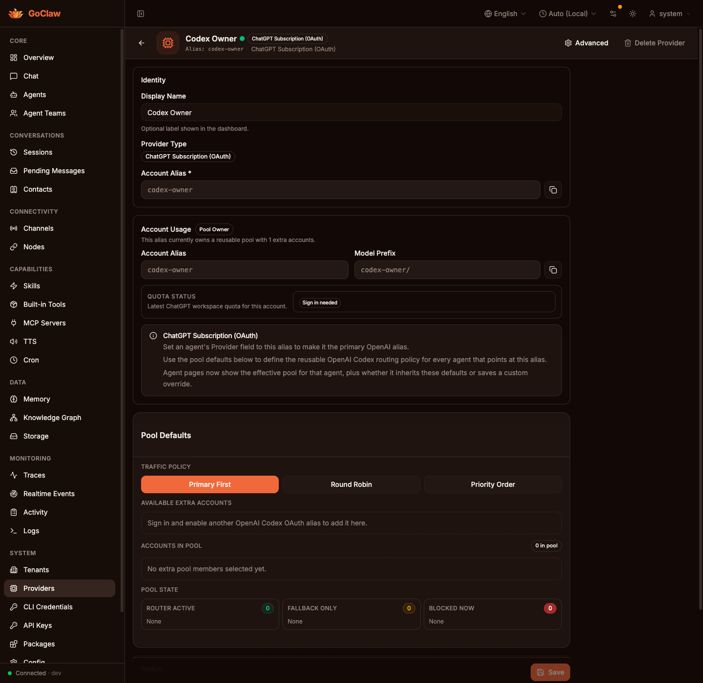

Provider Detail
Before

Main branch behavior:
Available Extra Accountsis effectively empty.Accounts in Poolshows0 in pool.- The saved disabled member is invisible, so the provider-owned pool looks unsaved.